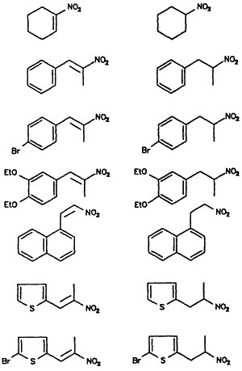

HTML by Rhodium
Borohydride supported on an ion exchange resin selectively reduced α,β-unsaturated nitroalkenes to nitroalkanes in high yields. The isolation of pure products by simple filtration is a key feature of this method.
Nitroalkanes have attracted attention in recent years because of their potential use as precursors to a variety of useful synthetic intermediates, including carbonyl1, nitrile oxide2, and amino compounds3. A variety of methods have been reported for the reduction of conjugated nitroalkenes to nitroalkanes4,5. Recently, we reported6 the use of sodium borohydride in a tetrahydrofuran-methanol solvent system for the reduction of α,β-unsaturated nitroalkenes. The nitroalkanes were formed in good yields after purification by silica gel column chromatography.
Table I
Reduction of α,β-Unsaturated Nitroalkenes to Nitroalkanes
Nitroalkene |
Nitroalkanea |
Yieldb |
Ref. |
|  | 80% | ||
81% | |||
80% | |||
83% | |||
79% | |||
78% | |||
82% | |||
Notes:
Polymer supported reagents have received considerable attention in recent years because of their potential use in substitution, oxidation, and reduction reactions7. Polymer supported borohydride reagents have been used for the chemoselective reduction of α,β-unsaturated carbonyl compounds to the corresponding allylic alcohols8,9. The reagent exhibits high chemoselectivity between the carbonyl groups of ketones and aldehydes10. The selective reducing property of the polymer supported borohydride ion prompted us to examine its utility in reductions of α,β-unsaturated nitroalkenes.
We wish to report that nitroalkenes are selectively reduced to nitroalkanes by borohydride supported on an ion exchange resin in methanol at room temperature. Borohydride bound resin was prepared by stirring a commercially available anion exchange resin, Amberlite IRA-400 (Cl- form) with aqueous sodium borohydride solution. The reaction procedure involves the addition of borohydride ion exchange resin to a methanolic solution of the nitroalkene. The reactions are complete within 60 min. and can be monitored by TLC (and in some cases by the disappearance of the yellow color of the nitroalkene). 11B-NMR spectroscopy of the methanolic reaction solution reveals no boron impurities. The product nitroalkanes are isolated by simple filtration and evaporation of the filtrate under reduced pressure. The resin may be reused by rinsing the spent material with dilute hydrochloric acid followed by regeneration with aqueous sodium borohydride solution.
The advantages of the borohydride bound ion exchange resin include the selective reduction of the olefinic bond in nitroalkenes at room temperature, low cost, and a simple isolation procedure. Our results are summarized in Table I.
Commercially available samples (Aldrich) of 1-nitro-1-cyclohexene sodium borohydride, and Amberlite IRA-400 (Cl-) ion exchange resin were used as received. All other nitro compounds were prepared via published procedures11.
Borohydride Bound Ion Exchange Resin
An aqueous solution of sodium borohydride (0.5M, 100 mL) was stirred with 10 g of wet, chloride-form resin (Amberlite IRA-400 anion exchange resin) for one hour. The resulting resin was washed throughly with distilled water until free of excess sodium borohydride. The borohydride bound exchange resin was then dried in vacuo at 65�C for 5 hours. The dried resin was analyzed for borohydride content by hydrogen evolution on acidification with 0.05 N HCl; the average capacity of the ion exchange resin was found to be 2.5 mmol of BH4- per gram of resin. The dried resin was stored under nitrogen at room temperature.
2-(2-Nitropropyl)-thiopene
2-(2-Nitropropenyl)-thiophene (2 mmol, 0.338 g) was dissolved in methanol (40 mL) in a 100 mL Erlenmeyer flask containing a magnetic stirring bar. Borohydride supported ion exchange resin (2.2 mmole, 0.88 g) was then added at room temperature to the well stirred solution. A mildly exothermic reaction ensued with the gradual disappearance of the yellow coloration (nitroalkene). The reaction mixture was stirred for 60 min. at room temperature and then the resin was filtered off, washed twice with methanol (10 ml x 2). Removal of methanol under reduced pressure yielded 0.265 g (78%) of pure 2-(2-nitropropyl)thiophene as an oil.
2-(2-Nitropropyl)-5-bromothiophene
The reaction was carried out as described in the general procedure using 2-(2-nitropropenyl)-5-bromothiophene (2 mmole, 0.496 g), borohydride supported ion exchange resin (2.2 mmole, 0.88 g) and methanol (40 mL) yielded 0.413 g (82%) of 2-(2-nitropropyl)- 5-bromothiophene.
1-(2-Nitropropyl)-4-bromobenzene
The reaction was carried out as described in the general procedure using 1-(2-nitropropenyl)-4-bromobenzene (1 mmol, 0.242 g), borohydride supported ion exchange resin (1.1 mole, 0.44 g) and methanol (25 mL) yielded 0.195 g (80%) pure 1-(2-nitropropyl)- 4-bromobenzene as an oil.